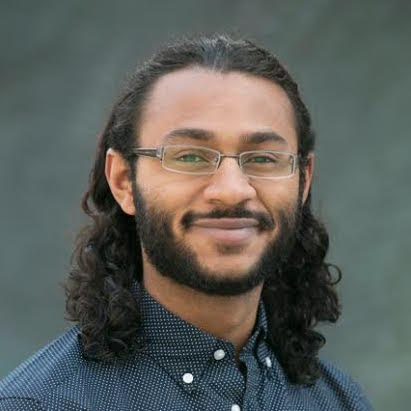

|
Sungjin Ahn is an Assistant Professor of Computer Science at
Rutgers University and directs the Rutgers Machine Learning (RUML) lab. He is also affiliated with Rutgers Center
for Cognitive Science. His research focus is on how an AI-agent can learn the structure and representations of
the world in an unsupervised and compositional way, with a particular interest in object-centric learning. His
approach to achieving this is based on deep learning, Bayesian modeling, reinforcement learning, and inspiration
from cognitive & neuroscience. He received Ph.D. at the University of California, Irvine with Max Welling and did
a postdoc with Yoshua Bengio at Mila. Then, he joined Rutgers University in Fall 2018. He has co-organized ICML
2020 Workshop on Object-Oriented Learning and received the ICML best paper award in ICML 2012.
|
|
Renée Baillargeon is an Alumni
Distinguished Professor of Psychology at the University of Illinois Urbana-Champaign. Her research examines
cognitive development in infancy and focuses primarily on causal reasoning. In particular, she explores how
infants make sense of the events they observe, and what explanatory frameworks and learning mechanisms enable them
to do so. In addition to this primary focus on causal reasoning, she is interested in a broad range of related
issues including object perception, categorization, object individuation, number, and executive-function skills.
|
|

Wilka Carvalho is a PhD Candidate in Computer Science at the
University of Michigan–Ann Arbor where he is advised by Honglak Lee, Satinder Singh, and Richard Lewis. His
long-term research goal is to develop cognitive theories of learning that help us understand how humans infer,
reason with, and exploit the rich structure present in realistic visual scenes to enable sophisticated behavioral
policies. Towards this end, he is studying how object-centric representation learning and reinforcement learning
can bring us closer to human-level artificial intelligence. He is supported by an NSF GRFP Fellowship and a UM
Rackham Merit Fellowship.
|
|
Dieter Fox.
|
 Jessica Hamrick is a Senior Research Scientist at DeepMind,
where she studies how to build machines that can flexibly build and deploy models of the world. Her work combines
insights from cognitive science with structured relational architectures, model-based deep reinforcement
learning, and planning. Jessica received a Ph.D. in Psychology from UC Berkeley in 2017, and an M.Eng. and B.S.
in Computer Science from MIT in 2012.
Jessica Hamrick is a Senior Research Scientist at DeepMind,
where she studies how to build machines that can flexibly build and deploy models of the world. Her work combines
insights from cognitive science with structured relational architectures, model-based deep reinforcement
learning, and planning. Jessica received a Ph.D. in Psychology from UC Berkeley in 2017, and an M.Eng. and B.S.
in Computer Science from MIT in 2012.
|
|
Irina Higgins is a research
scientist at DeepMind, where she works in the Frontiers team. Her work aims to bring together insights from the
fields of neuroscience and physics to advance general artificial intelligence through improved representation
learning. Before joining DeepMind, Irina was a British Psychological Society Undergraduate Award winner for her
achievements as an undergraduate student in Experimental Psychology at Westminster University, followed by a
DPhil at the Oxford Centre for Computational Neuroscience and Artificial Intelligence, where she focused on
understanding the computational principles underlying speech processing in the auditory brain. During her DPhil,
Irina also worked on developing poker AI, applying machine learning in the finance sector, and working on speech
recognition at Google Research.
|

 TBA.
TBA.